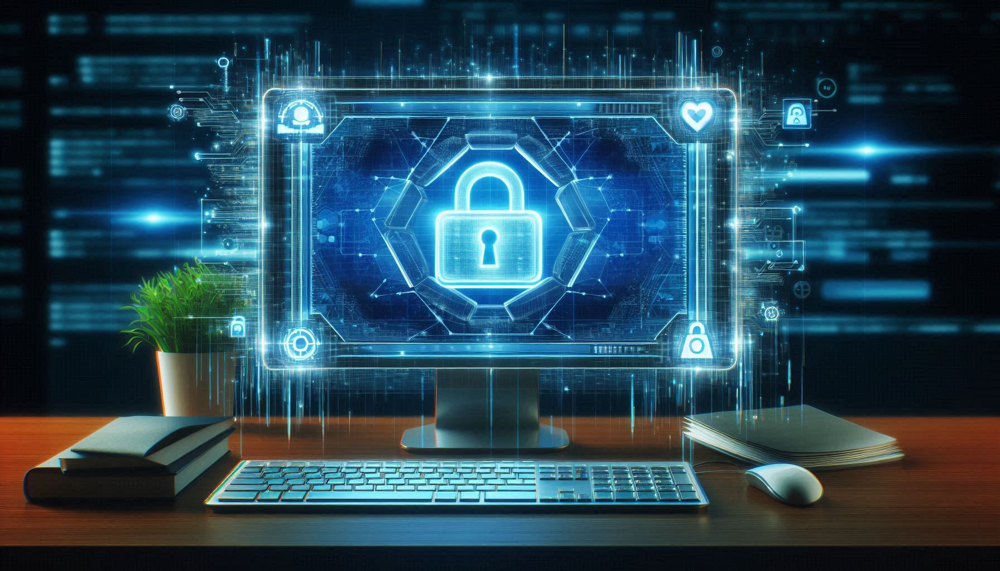

Чому важливо контролювати час, проведений в Інтернеті
Контроль часу, проведеного в Інтернеті, є важливим для підтримки продуктивності і загального благополуччя. Без належного управління ви можете швидко загубитися в онлайн-активностях, що негативно вплине на вашу роботу та особисте життя.
По-перше, витрачання надмірної кількості часу на соціальні мережі, відео або ігри може призвести до зниження продуктивності. Налаштування чітких меж для онлайн-активностей допоможе вам зберігати концентрацію на важливих завданнях.
По-друге, без контролю часу, проведеного в Інтернеті, можна легко забути про фізичні вправи, регулярні перерви і особистий час. Налаштування таймерів або використання додатків для контролю використання часу може допомогти вам знайти баланс між роботою і відпочинком.
Нарешті, контроль часу допомагає уникнути перевантаження інформацією і тривоги. Встановлення часових обмежень для онлайн-завдань і дотримання їх може позитивно вплинути на ваше психічне здоров'я.
Використовуйте ці поради для ефективного управління вашим онлайн-часом і збереження продуктивності. Якщо у вас є свої методи контролю часу, поділіться ними в коментарях!